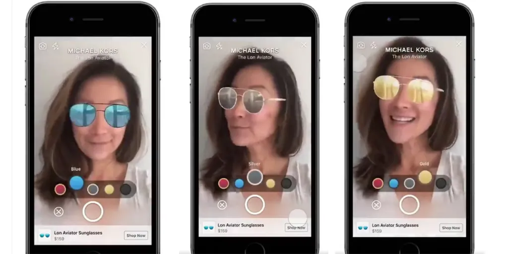
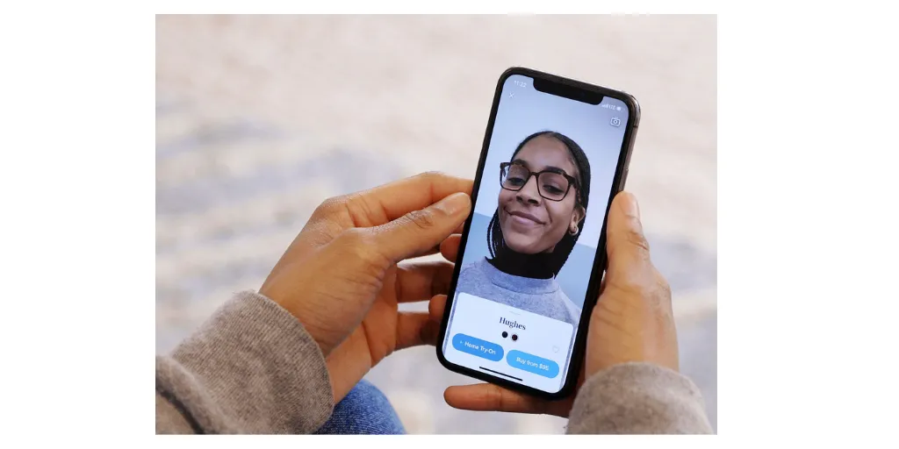
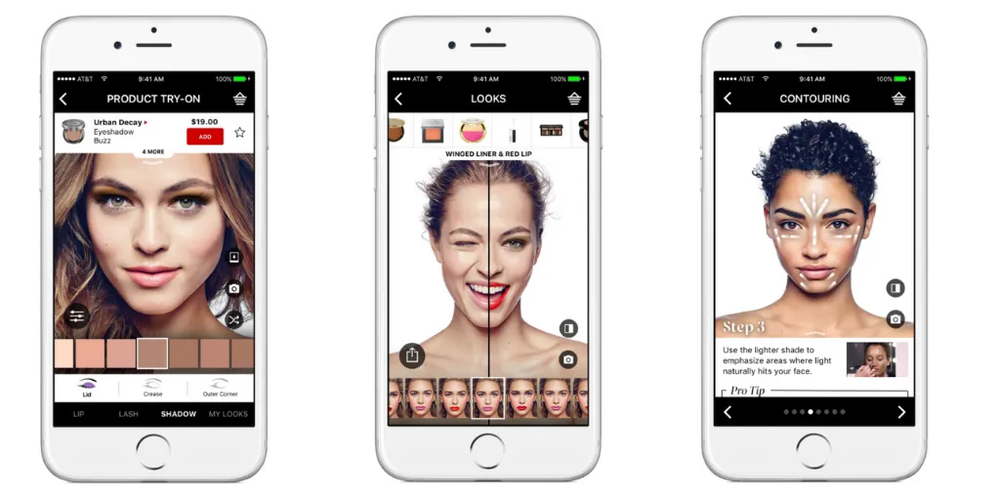

Lentes correctivos y Gafas para sol
Utilizando la cámara frontal del smartphone o dispositivo, captura una imagen en vivo del rostro del usuario, permitiendo ver en tiempo real el rostro con diferentes accesorios, colores, animaciones, y otras decoraciones divertidas que las personas simplemente no se pueden resistir a compartir con sus contactos de forma orgánica.
Ahora bien, además de una divertida foto modificada, puedes aprovechar dicha tecnología para brindar un plus a tu catálogo digital, permitiendo que tus clientes potenciales se observen a si mismos con tus productos en vivo y en directo, e incluso guardando una imagen para futura referencia, y puedan elegir el que mejor les convenga o les agrade desde cualquier lugar y en cualquier momento que tengan su smartphone a la mano.
Tomando como ejemplo a los comercios de ropa y accesorios que ya emplean los filtros faciales para sus probadores digitales, podrás notar como con nuestros servicios (link a servicios y / contacto) tu empresa también obtendría un excelente beneficio con ésta técnica de realidad aumentada:

Ya no necesitas ir hasta la óptica para probarte esos lentes que necesitas o que te gustan. De hecho, ni siquiera necesitarás un espejo...sólo la cámara frontal de tu smartphone. Marcas como Warby Parker, un fabricante de gafas correctivas y para sol, ya implementan una app mediante la cual el usuario puede elegir el armazón y lente que más le convenza y se ajuste a su rostro, y compartirlo directamente en su red social de preferencia:

Sephora, una de las distribuidoras de artículos de belleza más reconocidas a nivel mundial, cuenta con su propia aplicación de reconocimiento facial 3D para que puedas probar su gama de maquillaje y comprobar si es realmente lo que buscas o necesitas. Con solo una selfie que subas a su plataforma, podrás interactuar con distintos colores, tonos, y texturas en tu rostro, y distribuirlos, difuminarlos, y difuminarlos a tu conveniencia. Evidentemente, las opciones de compartir en la red social de preferencia se encuentra presente.

Por otro lado, L’Oréal y Estée Laude ofrecen una opción de video, mediante la cual puedes videograbar tu rostro y probar sus diferentes productos cosméticos para ojos, labios, mejillas, y demás desde diversos ángulos, los diferentes tonos adaptándose a al movimiento del rostro y la iluminación del entorno. Adicional a esto, se puede adaptar un botón de llamada para ponerte en contacto con un asesor profesional que asista a encontrar el producto más conveniente según las necesidades del cliente, así como emitir una recomendación y calificación directa del servicio y los productos.
En Illutio, podemos ayudarte a adaptar este tipo de soluciones digitales con Realidad Aumentada para tu negocio, pues contamos con amplia experiencia en el rango del Reconocimiento Facial 3D para ésta y más aplicaciones que brindarán un importante valor agregado a tu negocio, sin mencionar la conveniencia para los clientes, quienes no tendrán que salir de sus hogares para probar tus productos durante éstos tiempos en que aún nos encontramos restringidos por la continua pandemia de Covid 19.
En nuestra próxima entrada, hablaremos de algunos ejemplos adicionales de técnicas de Realidad Aumentada que otros comercios han implementado. ¿Cómo se vería ese sillón que te gustó en tu sala? Averígualo en nuestro siguiente blog.